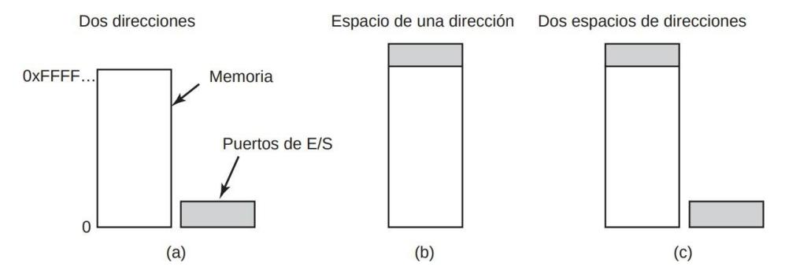
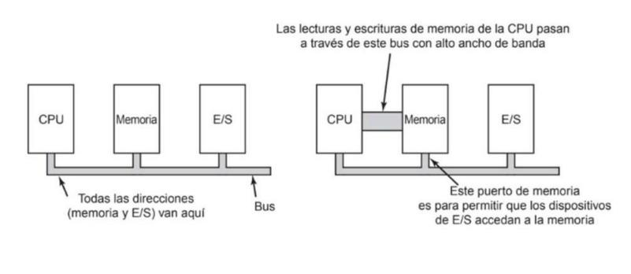
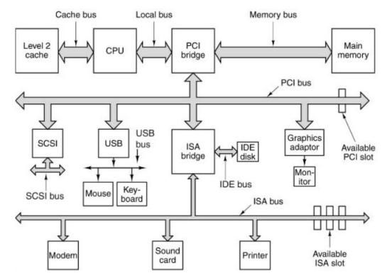
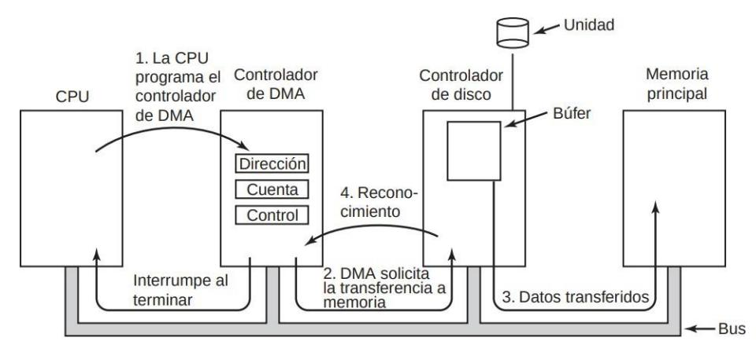
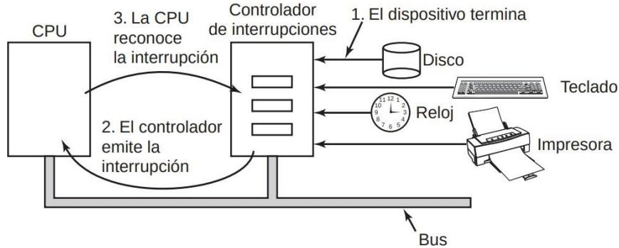
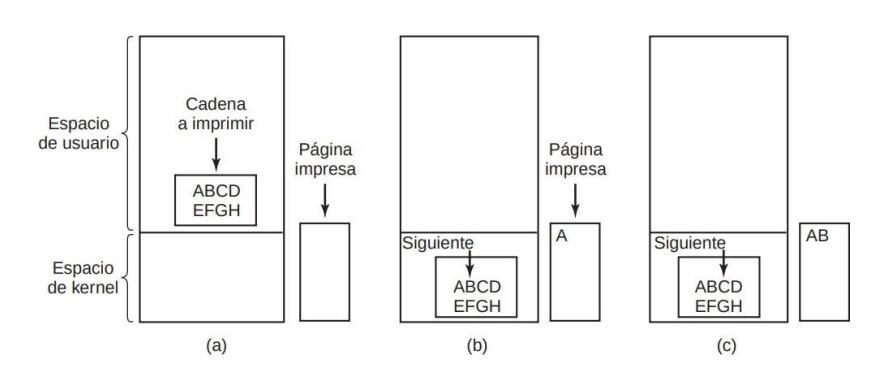

SISTEMAS OPERATIVOS · curso 2
5. Entrada-Salida
Escrito por Adrián Quiroga Linares.
Entrada/Salida - Métodos de Tortura Medieval PT2
Una de las principales tareas del SO es controlar todos los dispositivos de E/S de la computadora. Para poder hacer esto, el SO debe de ser capaz de:
- Emitir comandos para los dispositivos.
- Captar las interrupciones que produzcan los dispositivos.
- Manejar los errores que puedan provocar los dispositivos.
- Proporcionar una abstracción al usuario en forma de interfaz simple entre los dispositivos y el resto del sistema. Hasta donde sea posible, esta interfaz debe ser igual para todos los dispositivos.
El software de E/S forma una parte significante del código del SO. Está estructurado en niveles, cada uno de los cuales tienen una tarea bien definida. Sobre el hardware de E/S nos centraremos únicamente en su interfaz con el software.
5.1. Principios del Hardware de E/S
5.1.1. Dispositivos de E/S
Los dispositivos de E/S se pueden dividir básicamente en dos categorías: dispositivos de bloque y dispositivos de carácter. Un dispositivo de bloque almacena información en bloques de tamaño fijo, cada uno con su propia dirección. Los tamaños de bloque comunes varían desde 512 bytes hasta 32,768 bytes. Todas las lecturas y escrituras se realizan en unidades de uno o más bloques enteros consecutivos. La propiedad esencial de un dispositivo de bloque es que es posible leer o escribir cada bloque de manera independiente de los demás. Los discos duros, CDs y memorias USBs son dispositivos de bloque comunes.
El otro tipo de dispositivo de E/S es el dispositivo de carácter. Un dispositivo de carácter envía o acepta un flujo de caracteres, sin importar la estructura del bloque. Los caracteres no son
| Dispositivo | Velocidad de transferencia de datos | |
|---|---|---|
| Teclado | 10 bytes/seg | |
| Ratón | 100 bytes/seg | |
| Módem de 56K | 7 KB/seg | |
| Escáner | 400 KB/seg | |
| Cámara de video digital | 3.5 MB/seg | |
| 802.11g inalámbrico | 6.75 MB/seg | |
| CD-ROM de 52X | 7.8 MB/seg | |
| Fast Ethernet | 12.5 MB/seg | |
| Tarjeta Compact Flash | 40 MB/seg | |
| FireWire (IEEE 1394) | 50 MB/seg | |
| USB 2.0 | 60 MB/seg | |
| Red SONET OC-12 | 78 MB/seg | |
| Disco SCSI Ultra 2 | 80 MB/seg | |
| Gigabit Ethernet | 125 MB/seg | |
| Unidad de disco SATA | 300 MB/seg | |
| Cinta de Ultrium | 320 MB/seg | |
| Bus PCI | 528 MB/seg |
direccionables y no tienen ninguna operación de búsqueda. Lasimpresoras, lasinterfaces de red, losratones y la mayoría de los demás dispositivos que no son parecidos al disco se pueden considerar como dispositivos de carácter.
Este esquema de clasificación no es perfecto. Algunos dispositivos simplemente no se adaptan. Por ejemplo, los relojes no son direccionables por bloques. Tampoco generan ni aceptan flujos de caracteres. Todo lo que hacen es producir interrupciones a intervalos bien definidos. Aún así, el modelo de dispositivos de bloque y de carácter es lo bastante general como para poder utilizarlo como base para hacer que parte del sistema operativo que lidia con los dispositivos de E/S sea independiente.
Los dispositivos de E/S cubren un amplio rango de velocidades. La figura 5.1. muestra las velocidades de transferencia de datos de algunos dispositivos comunes. La mayoría de estos dispositivos tienden a hacerse más rápidos a medida que pasa el tiempo.
5.1.2. Controladores de Dispositivos
Por lo general, las unidades de E/S consisten en un componente mecánico (dispositivo) y un componente electrónico (dispositivo controlador). A menudo es posible separar las dos porciones para proveer un diseño más modular y general. El componente electrónico se llama controlador de dispositivo o adaptador. En las computadoras personales, comúnmente tiene la forma de un chip en la tarjeta principal o una tarjeta de circuito integrado que se puede insertar en una ranura de expansión (PCI). El componente mecánico es el dispositivo en sí.
El controlador tendrá un conector para un cable que lleva al dispositivo en sí. Muchas veces, a una sola tarjeta controladora se le pueden conectar varios dispositivos. Si la interfaz entre la controladorea y el dispositivo es estándar, las empresas fabricarán controladores y dispositivos que se adapten a ella.
5.1.3. Comunicación Controladora – CPU
Cada controlador tiene unos cuantos registros que se utilizan para comunicarse con la CPU. Al escribir en los registros, el sistema operativo puede hacer que el dispositivo envíe o acepte datos, se encienda o se apague, o realice cualquier otra acción. Al leer de estos registros, el sistema operativo puede conocer el estado del dispositivo, si está preparado o no para aceptar un nuevo comando, y sigue procediendo de esa manera. Además de los registros de control, muchos dispositivos tienen un búfer de datos que el sistema operativo puede leer y escribir.
De todo esto surge la cuestión acerca de cómo se comunica la CPU con los registros de control y los búferes de datos de los dispositivos. Existen dos alternativas. Mediante un puerto de E/S o una dirección de memoria.
5.1.3.1 Puertos de E/S
Consiste en aginarle a cada registro de control un número de puertos de E/S (entero de 8 o 16 bits). El conjunto de todos los puertos de E/S forma el espacio de puertos de E/S. Sólo el SO puede acceder a él. Es independiente del espacio de direcciones de la memoria: una dirección x en el espacio de direcciones de memoria es diferente a una dirección x en el de puertos. Las operaciones de lectura y escritura en puertos no se pueden realizar con las instrucciones para memoria lw y sw , se usan instrucciones especiales IN y OUT.
IN REG,PUERTO, o OUT PUERTO, REG
En este esquema, los espacios de direcciones para la memoria y la E/S son distintos, como se muestra en la figura 5.2.(a). Las instrucciones IN R0,4 y MOV R0,4 son completamente distintas en este diseño. La primera lee el contenido del puerto 4 de E/S y lo coloca en RO, mientras que la segunda lee el contenido de la palabra de memoria 4 y lo coloca en RO. Los 4s en estos ejemplos se refieren a espacios de direcciones distintos y que no están relacionados.
5.1.3.2 Asignación de Memoria.
Consiste en asignar los registros de control al espacio de direcciones de memoria. A cada registro de control se le asigna una dirección de memoria única para la que no hay memoria asignada.
5.1.3.3 Esquema Híbrido
Consiste en asignar los búferes de datos al espacio de direcciones de memoria y los registros de control en un espacio de puertos de E/S separados.
5.1.3.4 Funcionamiento de estos Esquemas.
Cuando la CPU desea una palabra (ya sea de memoria o de un puerto de E/S):
- La CPU coloca la dirección que necesita (ya sea de memoria o de un puerto de E/S) en el bus de direcciones.
- La CPU activa la señal read en el bus de control.
- En función del esquema usado:
- o Usando puertos de E/S:
- Se añade un bit en el bus de control para indicar si se necesita una palabra de E/S o de memoria.
- Responde la memoria o el dispositivo de E/S.
- o Usando puertos de E/S:
o Usando asignación de memoria:
- Todos los módulos de memoria y los dispositivos de E/S comprueban si la dirección está en su rango.
- Si la dirección está en su rango, responde a la petición. Como ninguna dirección se asigna tanto a la memoria como a un dispositivo de E/S, no hay ambigüedad ni conflicto.

FIGURA 5.2. (a) Espacio separado de E/S y memoria. (b) E/S por asignación de memoria. (c) Híbrido.
En la imagen a se encuentran en el dispositivo controlador. En la imagen b se encuentran en la RAM en una región protegida en el kernel.
5.1.3.5 Ventajas de la E/S por asignación de Memoria.
Los dos esquemas para direccionar los controladores tienen distintos puntos fuertes y débiles. Vamos a empezar con las ventajas de la E/S por asignación de memoria. En primer lugar, si usamos el sistema de puertos de E/S si se necesitan instrucciones de E/S especiales para leer y escribir en los registros de control, para acceder a ellosse requiere el uso de código ensamblador, ya que no hay forma de ejecutar una instrucción IN o OUT en C o C++. En contraste, con la E/S por asignación de memoria los registros de control de dispositivos son sólo variables en memoria y se pueden direccionar en C de la misma forma que cualquier otra variable. Así, con la E/S por asignación de memoria, un controlador de dispositivo de E/S puede escribirse completamente en C.
En segundo lugar, con la E/S por asignación de memoria no se requiere un mecanismo de protección especial para evitar que los procesos realicen operaciones de E/S. Todo lo que el sistema operativo tiene que hacer es abstenerse de colocar esa porción del espacio de direcciones que contiene los registros de control en el espacio de direcciones virtuales de cualquier usuario. Mejor aún, si cada dispositivo tiene sus registros de control en una página distinta del espacio de direcciones, el sistema operativo puede proporcionar a un usuario el control sobre dispositivos específicos, pero no el de los demás, con sólo incluir las páginas deseadas en su tabla de páginas.
5.1.3.6 Desventajas de la E/S por asignación de Memoria.
La E/S por asignación de memoria también tiene sus desventajas. En primer lugar, la mayoría de las computadoras actuales tienen alguna forma de colocar en caché las palabras de memoria. Sería desastroso colocar en caché un registro de control de dispositivos. Considere el ciclo de código en lenguaje ensamblador mostrado a continuación en presencia de caché. La
primera referencia a PUERTO_4 haría que se colocara en la caché. Las referencias subsiguientes sólo tomarían el valor de la caché sin siquiera preguntar al dispositivo. Después, cuando el dispositivo por fin estuviera listo, el software no tendría manera de averiguarlo. En vez de ello, el ciclo continuaría para siempre.
Para evitar esto, las páginas del espacio de direcciones asignadas a los registros de control deben marcarse como no cacheables. Coherencia caché: si guradamos el registro de control en caché, los datos que la CPU lee o escribe pueden estas desfasados. La CPU puede leer de la cache en vez del dispositivo.
Todos los módulos de memoria y los dispositivos de E/S deben examinar todas las referencias a memoria para saber a cuáles tienen que responder. Esto es sencillo si el ordenador tiene un solo bus, pero normalmente existirá un bus separado de alta velocidad dedicado únicamente a la memoria. Como consecuencia, los disipativos de E/S no tienen manera de ver las direcciones de memoria que van por el bus de memoria, así que no las pueden responder. Hay dos posibles soluciones a esto:
- Se envían todas las referencias a la memoria principal, y si esta no puede responder, la CPU prueba con otros buses. Requiere hardware adicional.
- Se filtran las direcciones que salen de la CPU con un puente PCI que contiene registros de rango que se cargan durante el arranque del sistema, de manera que las direcciones ubicadas dentro de un rango que no pertenece a la memoria se envían al bus PCI en lugar de al bus de memoria.


5.1.4. Acceso directo a memoria (DMA)
El acceso directo a memoria (DMA) permite liberar a la CPU de labores poco sofisticadas relacionadas con la transferencia de datos de operaciones de E/S. Para usar este esquema, el hardware debe tener alguna controladora de DMA, que accede al bus de forma independiente de la CPU. Normalmente hay una única controladora DMA, que accede al bus de forma independiente de la CPU. Contiene varios registros en los que escribir y leer:
- Registro de dirección de memoria.
- Registro de contador de bytes.
- Registros de control, que especifican:
- o El puerto E/S a utilizar
- o El tipo de transferencia (R/W)
- o Unidad de transferencia (byte o palabra)
- o Número de bytes a transferir por ráfaga.
Puede gestionar varias transferencias a la vez, de manera que cada una de ellas usar una controladora de E/S distinta y tiene un canal con sus propios registros. Usa direcciones físicas para realizar las
transferencias, por lo que las direcciones virtuales se tendrán que traducir antes de pasárselas a la controladora DMA.
Las lecturas de disco sin DMA siguen el siguiente esquema:
- La controladora del disco lee el bloque solicitado, lo coloca bit a bit en su buffer interno y comprueba que no hay errores en él.
- La controladora del disco produce una interrupción.
- La CPU lee el bloque del buffer palabra a palabra (pues para poder acceder al buffer se tienen que cargar sus datos en un registro) y las va almacenando en memoria.
Las lecturas de disco con DMA siguen el siguiente esquema:
- El SO programa la controladora del DMA escribiendo en sus registros y le indica al disco que debe leer datos en su buffer y verificarlos.
- Cuando ya hay datos válidos en el búfer del disco, la controladora de DMA envía una petición de lectura al controlador del disco que incluirá la dirección de memoria principal donde se escribirán los datos.
- La controladora del disco va escribiendo los datos de su buffer en memoria principal en ciclos de bus estándar, es decir, palabra por palabra.
- Cuando acaba una escritura, le envía un reconocimiento a la controladora de DMA. Esta incrementa la dirección de memoria a escribir y disminuye la cuenta de bytes.
- Cuando la cuenta de bytes llega a 0, la controladora de DMA envía una señal a la CPU para informarle de que ya acabó la transferencia de datos.
Las controladoras DMA pueden operar en el bus de dos maneras:
- En modo palabra: la controladora DMA compite con la CPU por el acceso al bus, robando ciclos de bus a la CPU para hacer las transferencias de datos.
- En modo bloque: la controladora DMA indica al dispositivo que debe adquirir el bus, relaizar una ráfaga de transferencias y después liberarlo. El modo de ráfaga es mucho más eficiente que el robo de ciclo, pero puede bloquear la CPU si las ráfagas son muy largas.
No todoslos sistemas usan DMA, pues si no hay más trabajo que realizar, es másrápido que la CPU se ocupe de las transferencias.

FIGURA 5.4. Operación de una transferencia de DMA.
Concluyendo:
El robo de ciclo consiste en la apropiación del bus por parte de la controladora DMA de forma intermitente en momentos de actividad baja de la CPU, "robando" un ciclo de reloj para realizar sus operaciones de acceso a memoria e intercambio de datos. Dado que el proceso de apropiación del bus lleva un tiempo, la CPU puede verse ralentizada ligeramente debido a dichos "robos", ya que es considerablemente más rápida que la DMA.
Por otro lado, el modo ráfaga es un procedimiento más eficiente en general ya que consiste en la coordinación entre la DMA y el dispositivo periférico para realizar la transmisión de secuencias de datos completos, ocupando un menor número de veces el bus y tratando un mayor número de datos de cada vez. No obstante, si la secuencia de datos es extensa puede bloquear el acceso de la CPU al bus durante más tiempo.
No compensa usar DMA en procesos donde las operaciones de E/S son rápidas, dado que la CPU es más veloz que la DMA. La existencia de la DMA sirve para que los demás procesos se beneficien de que la CPU no se encuentre ocupada gestionando operaciones de E/S, permitiendo así un mayor acceso a la misma.
La mayoría de los controladores de DMA utilizan direcciones físicas de memoria para sus transferencias. No todas las computadoras utilizan DMA. El argumento en contra es que la CPU principal es a menudo más rápida que el controlador de DMA y puede realizar el trabajo con mucha mayor facilidad (cuando el factor limitante no es la velocidad del dispositivo de E/S). Si no hay otro trabajo que realizar, hacer que la CPU (rápida) tenga que esperar al controlador de DMA (lento) para terminar no tiene caso.
5.1.5. Repaso de interrupciones
A nivel de hardware, las interrupciones funcionan de la siguiente manera:
- Cuando un dispositivo de E/S (o DMA) termina su trabajo, produce una interrupción imponiendo una señal en la línea de bus que tenga asignada.
- Esta señal es detectada por la controladora de interrupciones, que está dentro de la placa base.
- La controladora de interrupciones emite una señal para interrumpir a la CPU, pasándole un número que indica qué dispositivo de E/S (o DMA) provocó la interrupción.
- La CPU deja lo que está haciendo y comienza a ejecutar la rutina de manejo de la interrupción, cuya dirección se encuentra en la entrada del vector de interrupciones correspondiente al número del dispositivo que provocó la interrupción.
- La CPU ejecuta la rutina de interrupción, que siempre comenzará por guarda lar información en la pila.

FIGURA 5.5. Cómo ocurre una interrupción. Las conexiones entre los dispositivos y el controlador de interrupciones en realidad utilizan líneas de interrupción en el bus, en vez de cables dedicados.
Cabe destacar que el vector de interrupciones es una estructura que no está relacionada con ningún proceso en particular. Es una estructura encargada de indicar al sistema operativo las rutinas asociadas a determinadas interrupciones para su posterior gestión, y se almacena en el kernel.
5.2. Fundamentos del software de E/S
5.2.1. Conceptos clave
Existen 2 tipos de transferencias E/S:
- Transferencias síncronas → implican el bloqueo del proceso involucrado.
- Transferencias asíncronas → son controladas por interrupciones, la CPU inicia la transferencia y hace otras cosas hasta que llega la interrupción.
La mayoría de las operaciones de E/S son asíncronas, el SO es el responsable de hacer que en los programas de usuario parezcan de bloqueo. Todas las transferencias usan un buffer en la zona de kernel de la memoria principal como almacenamiento temporal hasta que se llevan los datos a su destino final, que en ocasiones no se conoce hasta que se examina el contenido del búfer.
- Permite realizar un chequeo de errores sobre los datos y desacoplar el llenado del vaciado del búfer.
- Su uso implica una cantidad considerable de copiado, lo que afecta al rendimiento de las operaciones de E/S.
Hay 3 maneras distintas para llevar a cabo la E/S: programada, controlada por interrupciones o mediante DMA
5.2.2. E/S programada
La CPU sondea constantemente el dispositivo de E/S para ver si está listo para continuar con la transferencia. Es la forma más simple de realizar operaciones de E/S. El problema es que se ocupa la CPU hasta que se finaliza la operación.

Ejemplo: syscall para imprimir "ABCDEFGH" en una impresora.
- El SO copia el búfer del espacio de usuario en un array en el espacio de kernel para usarlo con más facilidad.
- El SO comprueba si la impresora está disponible. Si no lo está, espera hasta que lo esté.
- Tan pronto como la impresora esté disponible, el SO copia un carácter al registro de datos de la impresora.
- Se repiten los pasos 2 y 3 hasta finalizar la cadena.
Las acciones realizadas por el sistema operativo se sintetizan en la figura 5.7. El aspecto esencial de la E/S programada, que se ilustra con claridad en esta figura, es que después de imprimir un carácter, la CPU sondea en forma continua el dispositivo para ver si está listo para aceptar otro. Este comportamiento se conoce comúnmente como sondeo u ocupado en espera. La E/S programada es simple, pero tiene la desventaja de ocupar la CPU tiempo completo hasta que se completen todas las operaciones de E/S.
5.2.3. E/S controlada por interrupciones
La CPU comienza la transferencia y se planifica otro proceso, de manera que el que comenzó la transferencia queda bloqueado hasta que esta finalice. Sin embargo, el dispositivo de E/S generará muchas interrupciones para poder realizar la operación, que tendrá que resolver la CPU, desperdiciando tiempo de CPU. Ejemplo: syscall y manejador de interrupciones para imprimir "ABCDEFGH" en una impresora.
-
- El SO copia el búfer del espacio de usuario en un arreglo en el espacio de kernel para usarlo con más facilidad.
-
- Tan pronto como la impresora esté disponible se envía el primer carácter.
-
- La CPU llama al planificador y se bloquea el proceso.
-
- Cuando la impresora ha impreso el carácter y puede recibir otro, genera una interrupción.
-
- La interrupción bloquea el proceso actual y ejecuta el procedimiento de manejo de interrupciones de la impresora.
-
- Si no hay más caracteres en la cadena, se desbloquea el proceso.
-
- Si hay más caracteres por imprimir, se le envía a la impresora el siguiente y la CPU vuelve a hacer lo que estaba haciendo antes de la interrupción
5.2.4. E/S mediante el uso de DMA
La controladora DMA realiza la transferencia sin intervención de la CPU. Es como una E/S programada pero el trabajo lo realiza la DMA en lugar de la CPU.
Libera la CPU durante la operación de E/S para realizar otro trabajo. Sin embargo, requiere hardware especial.
Ejemplo: syscall y manejador de interrupciones para imprimir "ABCDEFGH" en una impresora.
FIGURA 5.9. Cómo imprimir una cadena mediante el uso de DMA.
- (a) Código que se ejecuta cuando se hace la llamada al sistema para imprimir.
- (b) Procedimiento de servicio de interrupciones.
5.3. Cosas Importantes de este Tema
Saber muy bien cómo funcionan los distintos tipos de acceso a memoria o chaparlos porque siempre pregunta uno y cómo funciona.